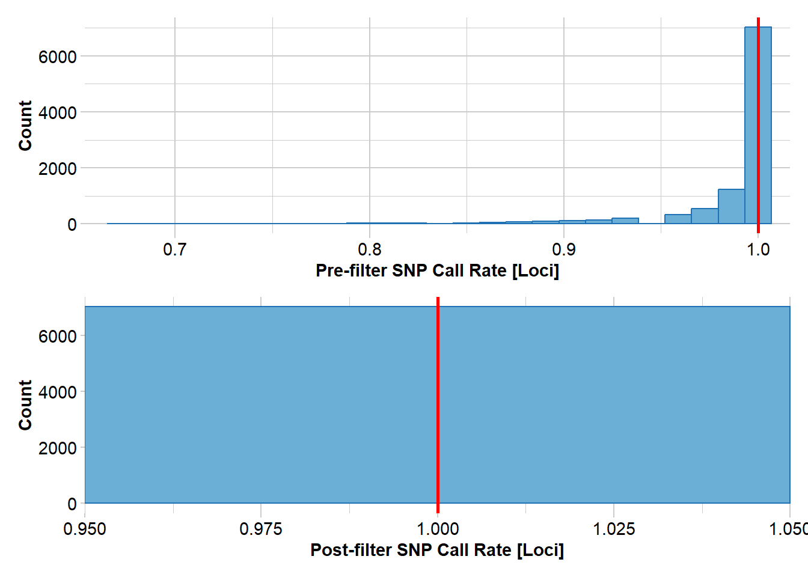
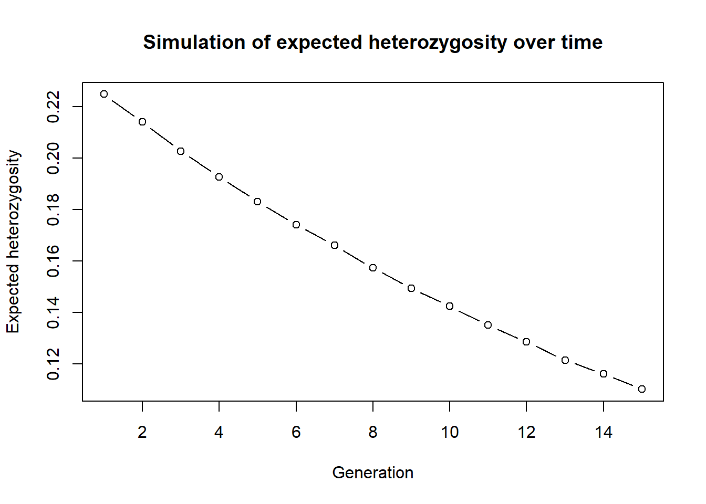
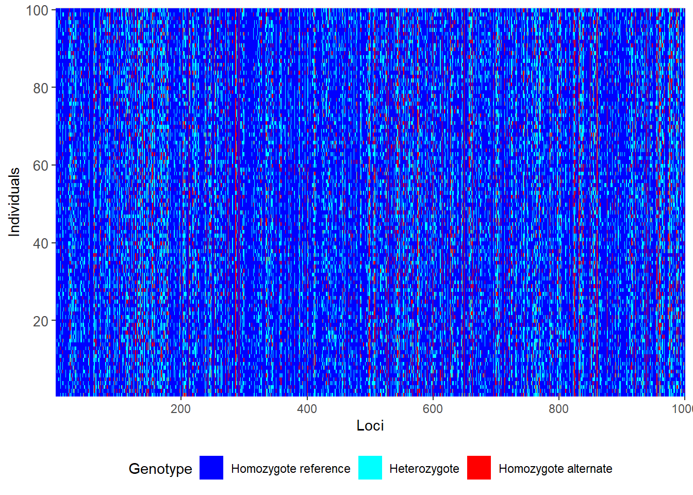
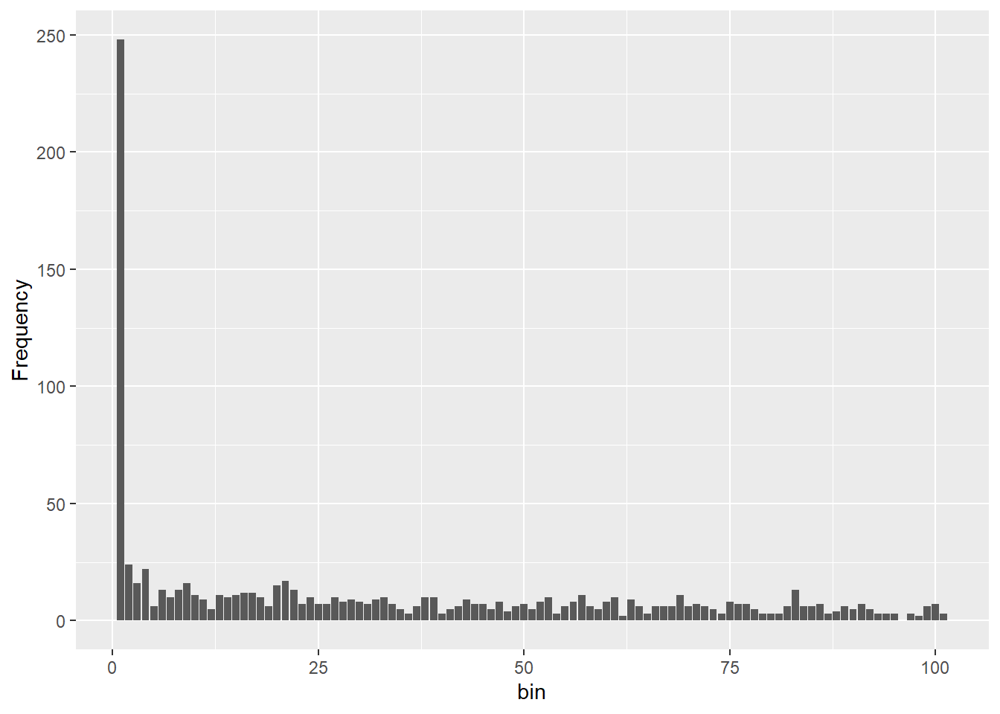
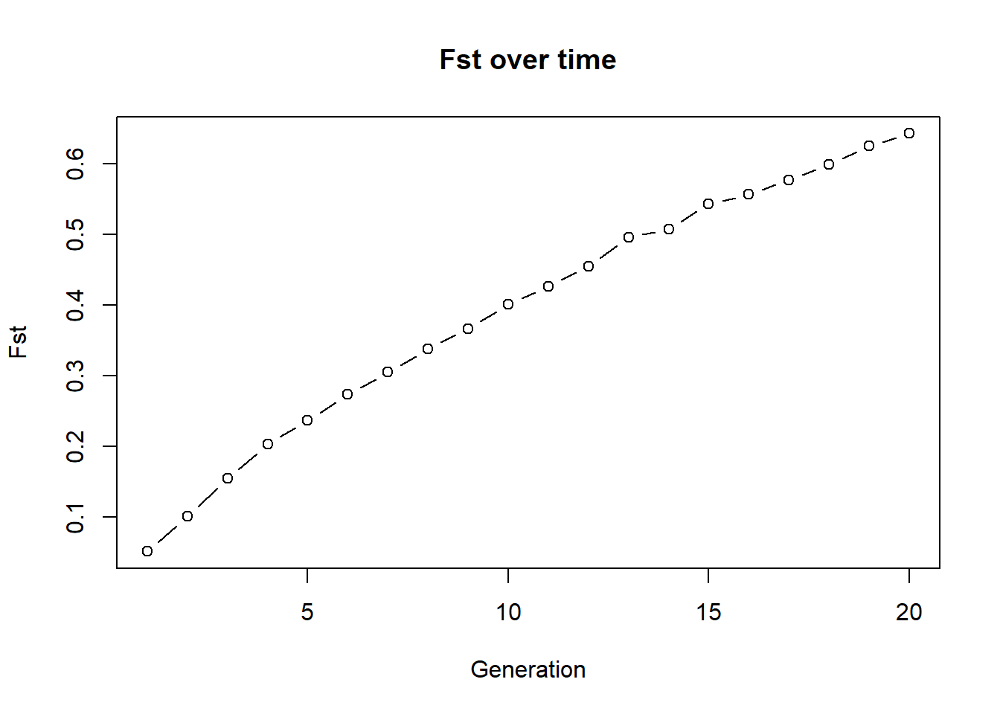
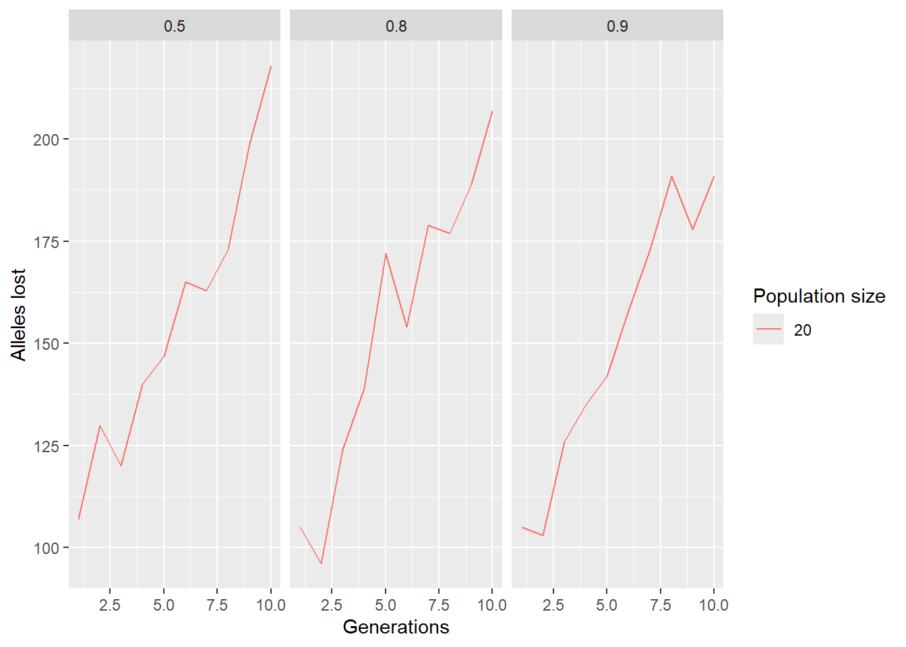
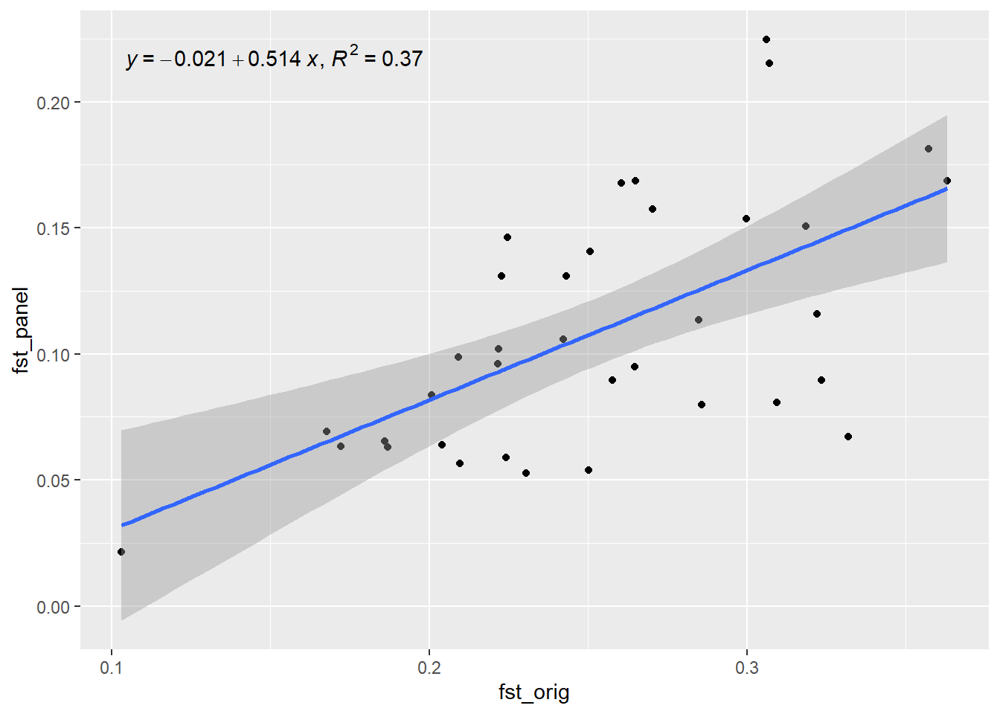
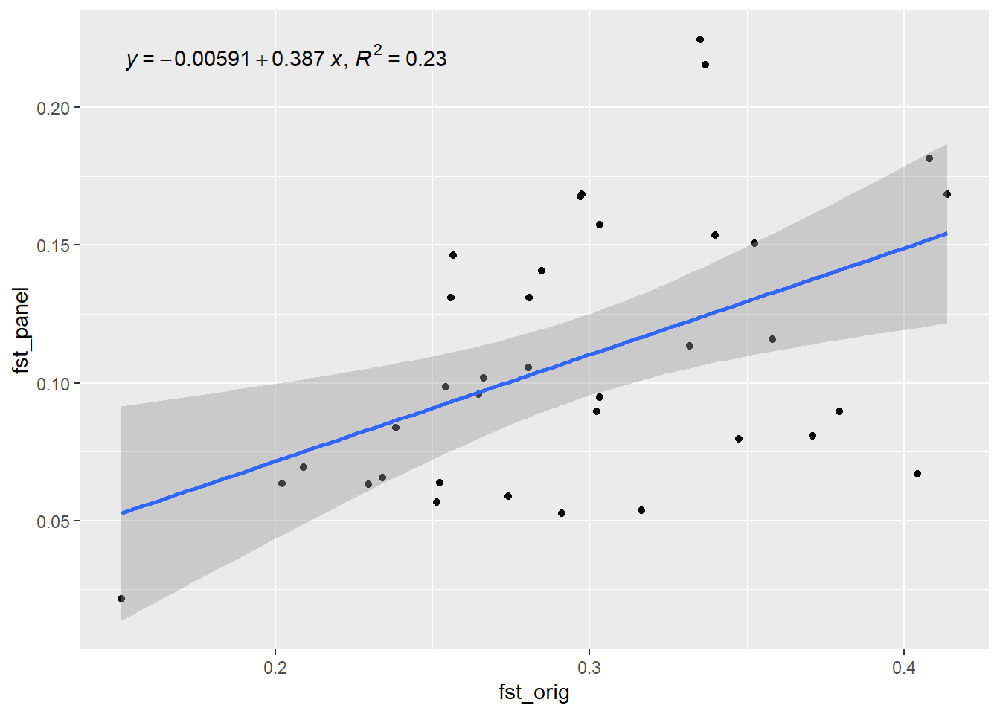
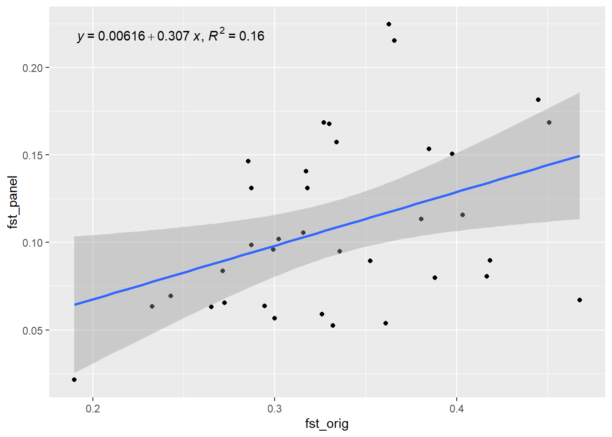

13 W13 Simulations
W13 Simulations for Conservation Genetics
Session Presenters
 and Luis
and Luis
Learning outcomes
In this session we will learn how to run simulations within the dartRverse. We will start with very simple simulations and then add complexity to them. By the end of the session you should be able to run simple simulations of genetic drift, population divergence, and demographic processes using dartR functions, and understand how to interpret the results in a conservation context.
Introduction
Using simulations in the dartRverse for conservation genetics
Simulation is one of the most powerful yet underused tools in conservation genetics. While empirical SNP datasets tell us what has happened, simulations allow us to ask what could happen under alternative management scenarios—and to do so quickly, transparently, and reproducibly. Within the dartRverse, simulations are designed as lightweight, modular building blocks that integrate naturally with SNP-based analyses used in applied conservation genetics.
At its core, the dartRverse simulation framework is not intended to compete with full forward-time population genetic simulators. Instead, it aims to provide rapid, interpretable simulations that allow conservation practitioners and researchers to explore genetic consequences of simplified demographic and management scenarios using the same data structures and summary statistics they already use for real populations.
Why simulate in a conservation context?
Many conservation questions are fundamentally dynamic:
- How quickly will a small population lose genetic variation through drift?
- How many generations does it take to lose 50% of heterozygosity under a given effective population size?
- How effective is supplementation or translocation at preserving allelic diversity?
- How fast do populations diverge when connectivity is reduced?
- How do metapopulation dynamics influence genetic differentiation, inbreeding, or genetic rescue outcomes?
Simulations allow these questions to be explored explicitly, often with simple assumptions, before committing to costly or irreversible management actions.
A modular, “lego-style” simulation philosophy
The dartRverse approaches simulations as a sequence of simple, composable processes. Rather than defining an entire demographic model upfront, users build scenarios by chaining together a small number of intuitive functions—much like assembling lego pieces.
At a conceptual level, simulations revolve around four core processes:
1. Population creation
Populations can be generated de novo or derived directly from empirical SNP datasets. This allows simulations to begin from realistic allele frequencies, levels of heterozygosity, and population structure, rather than abstract starting conditions.
2. Drift and mutation
Allele frequencies change over generations due to genetic drift, with optional mutation. Even under extremely simple population dynamics, this immediately illustrates how small effective population sizes rapidly erode genetic diversity—often far faster than expected.
3. Survival and migration
Individuals can survive, be removed, or migrate between populations. This enables exploration of connectivity, fragmentation, and metapopulation dynamics without invoking complex spatially explicit models.
4. Reproduction
Reproduction can be modelled through simple cloning or sexual reproduction, allowing users to explore consequences for heterozygosity, inbreeding, and relatedness under different mating systems.
Each step produces SNP data in familiar dartR objects, making it trivial to calculate standard diversity metrics at any point in the simulation.
Building complexity incrementally
A key strength of this approach is that complex dynamics emerge from simple rules. By combining basic processes, users can rapidly construct realistic conservation scenarios, such as:
- Periodic supplementation (e.g. adding individuals every five generations)
- Founder events followed by isolation
- Asymmetric migration between source and sink populations
- Temporary corridors that restore gene flow for limited time periods
Because simulations are embedded in R, users can easily extend them further—for example by introducing sex- or age-dependent survival, stochastic catastrophes, or spatial structure linked to resistance surfaces and home ranges.
Typical conservation genetics use cases
Some common applications of dartRverse simulations include:
Genetic drift over time
Tracking loss of heterozygosity or allelic richness across generations under different effective population sizes.Supplementation and genetic rescue
Evaluating how many individuals are required, and how often, to maintain genetic diversity or slow inbreeding.Metapopulation dynamics
Exploring how migration rates influence differentiation, extinction–recolonisation dynamics, and long-term persistence.Temporal change in population structure
Monitoring trajectories of population differentiation, relatedness, or inbreeding coefficients as populations diverge or reconnect.
Because simulated datasets are analysed using the same summary statistics as empirical SNP data, results are immediately interpretable and directly comparable to real monitoring data.
From exploration to decision support
Ultimately, simulations in the dartRverse allow conservation geneticists to test assumptions, visualise outcomes, and communicate genetic risks and benefits to managers and stakeholders. Even highly simplified simulations can provide powerful insights into how quickly genetic diversity can be lost—and how strategic interventions can slow, or even reverse, that loss. In this way, simulations become not just a teaching tool, but a practical component of evidence-based conservation decision-making.
Please be aware dartRverse is not a fully fledged simulation tool. It allows to do quick and easy simulations, but for a comprehensive simulation framework you should consider using SLIM. By the way there is a cool package called ‘slimR’ which allows to integrate and run simulations from within R (and it talk to the dartRverse for analysis).
Prerequisites and background knowledge
Simulations in the dartRverse can range from very simple to highly complex. At the simplest level, many conservation scenarios can be explored using built-in dartRverse functions with minimal coding, making simulations accessible to users with basic R skills. More advanced applications, however, require custom workflows written directly in R, where dartRverse functions are combined with user-defined logic to represent realistic demographic, genetic, or management processes.
As a result, a working knowledge of R programming and familiarity with dartR data objects (e.g. genlight, `dartR’ and related structures) is essential. Simulations often require small but important data transformations, such as subsetting populations, updating metadata, reshaping outputs, or tracking summary statistics across generations. When individual simulation runs become computationally intensive—particularly when stochasticity is important—it is common to repeat simulations hundreds or thousands of times. In these cases, parallelisation (using standard R tools) becomes critical for keeping runtimes practical.
Finally, simulations are only as informative as the questions they are designed to address. Users therefore need a solid understanding of population genetic concepts and appropriate metrics for quantifying genetic change. This includes knowing when to track heterozygosity, allelic richness, inbreeding, or population differentiation, and how these measures relate to processes such as drift, migration, and supplementation. Thoughtful choice of summary statistics is key to translating simulation outputs into meaningful conservation insights.
Session overview
This session introduces simulations in the dartRverse using a step-by-step complexity approach. We begin with very simple simulations and progressively add biological and demographic realism.
- Sim 1: A simple simulation
- Create a population from existing SNP data
- Simulate genetic drift over generations
- Track simple diversity metrics (e.g. heterozygosity over time)
- Sim 2: Replication and uncertainty
- Repeat simulations to capture stochasticity
- Visualise variability among simulation runs
- Interpret expected vs realised genetic trajectories
- Sim 3: Population divergence
- Simulate multiple isolated populations
- Explore how genetic differentiation (e.g. FST) increases over time
- Introduce migration to illustrate connectivity effects
- Sim 4: Demography and reproduction
- Add survival and reproduction processes
- Explore population size limits and allele loss
- Link demographic parameters to genetic outcomes
- Sim 5: Applied conservation questions
- Supplementation and genetic rescue scenarios
- Metapopulation dynamics
- Performance of SNP panels through time
- Wrap-up
- Key insights from simple vs complex simulations
- When dartRverse simulations are sufficient
- When to move to more detailed forward simulators
Setup
To setup the session, we need to load the necessary libraries. The main one is dartRverse which contains all the functions we will use for simulations and analysis. We also load ggplot2 and tidyr for data manipulation and visualization. Make sure you have these packages installed and loaded before proceeding with the tutorial and also make sure the dartRverse package is up to date, as the simulation functions are relatively new and may have been updated since the last release.
library(dartRverse)
library(ggplot2)
library(tidyr)Tutorial
Sim 1: A simple simulation
The dartRverse allows to run time forward simulations. Often you want to run some simulation based on an existing genlight object.
We load some example data
rfbe <- readRDS("./data/rfbe.rds")and then run the gl.report.basics function to check its content. Have a look at the output and feel free to explore the dataset further using other functions. You can for example check the the amount of missing data or the number of individuals in each population.
gl.report.basics(rfbe)The next step is to think about a simulation scenario. Here we come up with a very simple one:
So lets create a new population from the existing one by subsetting the dartR object and then subsample 10 individuals from it.
# copy only the source population int a new dartR object
source <- gl.keep.pop(rfbe, pop.list="PJTub1.2.3")Starting gl.keep.pop
Processing genlight object with SNP data
Checking for presence of nominated populations
Retaining only populations PJTub1.2.3
Warning: Resultant dataset may contain monomorphic loci
Locus metrics not recalculated
Completed: gl.keep.pop Next, we inspect the source population to determine the number of individuals and the extent of missing data.
### number of individuals in the source population
### missing data in the genotypes of the source populationAs you can see there is missing data in the source population.
Missing genotypes are generally undesirable in simulations, as they require explicit assumptions about how missing alleles are handled during reproduction. To avoid introducing additional complexity at this stage, we remove loci with missing data by filtering (an alternative approach would be genotype imputation). In most simulation studies, it is preferable to work with complete datasets; however, there are situations where the effects of missing data are themselves of interest, in which case an explicit strategy for handling missingness is required.
#remove missing data using a strict callrate filter
source2 <- gl.filter.callrate(source, method="loc", threshold=1)Starting gl.filter.callrate
Processing genlight object with SNP data
Warning: Data may include monomorphic loci in call rate
calculations for filtering
Recalculating Call Rate
Removing loci based on Call Rate, threshold = 1 
Completed: gl.filter.callrate #check if there are no missing data in the genotypes of source2The next step is to create a new population of 10 individuals using the source2 population
# create a new population of 10 individuals using individuals from source2
set.seed(7)
newpop <- gl.subsample.ind(source2, n=10, replace = FALSE, verbose = 0)#check number of individuals and missing data in newpopAs we want to observe the change in heterozygosity we calculate heterozygosity for this populuation
#find a way to calculate the mean heterozygosity of the new populationThe next step is then repeat this for 15 generations (assuming an ideal poulation for simplicity)
#we create a vector that holds heterozygosity over generation
res <- NA
#He of Generation 1
res[1] <- mean(gl.He(newpop))
for (gen in 2:15)
{
#ideal popluation = cloning snails
newpop <- gl.sim.ind(newpop, n=10)
#He of generation gen
res[gen] <- mean(gl.He(newpop))
cat("Generation", gen, "Heterozygosity:", res[gen], "\n")
flush.console()
}Generation 2 Heterozygosity: 0.2139878
Generation 3 Heterozygosity: 0.2027301
Generation 4 Heterozygosity: 0.1927387
Generation 5 Heterozygosity: 0.1830851
Generation 6 Heterozygosity: 0.1740539
Generation 7 Heterozygosity: 0.1661645
Generation 8 Heterozygosity: 0.1572521
Generation 9 Heterozygosity: 0.1494537
Generation 10 Heterozygosity: 0.1424043
Generation 11 Heterozygosity: 0.1350277
Generation 12 Heterozygosity: 0.1285154
Generation 13 Heterozygosity: 0.1214895
Generation 14 Heterozygosity: 0.1161175
Generation 15 Heterozygosity: 0.1101693 #Create a plot
plot(res, type="b", xlab="Generation", ylab="Expected heterozygosity",
main="Simulation of expected heterozygosity over time")
You can now change setting and play with the simulation. For example increase the number of generations or the number of initial founding individuals. You need to run the golden chunks in order to make sure all the objects are updated.
Here is the full simulation in one code block. Change to your liking. Eg. run more generations, or how does the simulation change if you sample from less/more individuals from the source, change the source population. Monitor observerd heterozygosity instead of experced.
rfbe <- readRDS("./data/rfbe.rds")
source <- gl.keep.pop(rfbe, pop.list="PJTub1.2.3", verbose=0)
source2 <- gl.filter.callrate(source, method="loc", threshold=1, verbose=0)
set.seed(7)
newpop <- gl.subsample.ind(source2, n=10, replace = FALSE, verbose = 0)
res<-NA
res[1] <- mean(gl.He(newpop))
for (gen in 2:15)
{
#ideal popluation = cloning snails
newpop <- gl.sim.ind(newpop, n=10)
#He of generation gen
res[gen] <- mean(gl.He(newpop))
}
plot(res, type="b", xlab="Generation", ylab="Expected heterozygosity",
main="Simulation of expected heterozygosity over time")This is a very simple simulation, but it shows the basic idea. You can also use the gl.sim.offspring function to simulate more complex scenarios, such as different mating systems and check the effect.
This was only one instance so we can repeat this simulation 10 times to get a better estimate of the expected heterozygosity over time. To do so we first create a function around the whole simulation (which makes life easier for repeats), as this will allow us to run the simulation in parallel using the parallel package.
simHe <- function(x, nInd=10, ngens=20)
{
#remove all missing data
#create a new genlight object based on allele frequencies from source2
transfer <- gl.subsample.ind(x, n=nInd, replace = FALSE, verbose = 0)
res <- mean(gl.He(transfer)) #mean heterozygosity
for (gen in 2:ngens)
{
#cloning snails
transfer <- gl.sim.offspring(transfer, transfer, noffpermother = 1)
res[gen] <- mean(gl.He(transfer))
}
return(res)
}Now we run the simulation by a simple call to the function. You can change the number of generations and the number of individuals in the founding population to see how it affects the expected heterozygosity over time.
#test the function
out <- simHe(source2, nInd = 30, ngens = 20)
plot(out, type="b", xlab="Generation", ylab="Expected heterozygosity",
main="Simulation of expected heterozygosity over time")
The step to parallelise them is straightforward. We can use the future package to run the simulations in parallel. This is especially useful when we want to run a large number of simulations (e.g., 100 or more) to capture the stochasticity of the process.
library(future.apply)
plan(multisession, workers=3) # or plan(multicore) on Unix-like systems
n_sims <- 9
sim_results <- future_lapply(1:n_sims, function(i) {
simHe(source2, nInd = 30, ngens = 20)}, future.seed=TRUE)
#create a plot
outmat <- data.frame(do.call(cbind, sim_results))
matplot(outmat, type="b", xlab="Generation", ylab="Expected heterozygosity",
main="Simulation of expected heterozygosity over time", col=1:n_sims, pch=1:n_sims)Sim 2: Starting conditions for simulations
So far, we simulated a very simple drift-only Wright–Fisher process by repeatedly calling gl.sim.ind(). gl.sim.ind() calculates for each loci allele frequencies and then creates the number of specified inviduals using those allele frequencies (stochastically). It therefore can handle missing data, but the resulting dartR-object will have no missing data.
In practice, you often want to (i) scale up an empirical population to a larger starting population, or (ii) generate a starting population under a demographic model.
Two useful helper functions are:
gl.sim.ind(): creates individuals based on the current allele frequencies in agenlight/dartR object (good when allele frequencies are well-estimated) and you want to simulate a sampled populations’ fate into the future.gl.sim.Neconst(): creates individuals based on a constant Ne and mutation rate (useful as a generic starting point; often followed by additional generations to reach realistic genotype structure). A good way to visualise the allele frequencies is a site-frequency spectrum (SFS) plot, which shows the distribution of allele frequencies across loci. This can help you understand the starting conditions of your simulation and how they might influence the outcomes.
A) gl.sim.ind: scaling up a well-sampled population
# (speed) use only 1000 loci
glsim_scale <- gl.sim.ind(source2[,1:1000], n = 100, popname = "scaled")
gl.smearplot(glsim_scale) Processing genlight object with SNP data
Starting gl.smearplot 
Completed: gl.smearplot 
gl.sfs(glsim_scale)Starting gl.sfs
Processing genlight object with SNP data
Completed: gl.sfs d0 d1 d2 d3 d4 d5 d6 d7 d8 d9 d10 d11 d12 d13 d14 d15
248 24 16 22 6 13 10 13 16 11 9 5 11 10 11 12
d16 d17 d18 d19 d20 d21 d22 d23 d24 d25 d26 d27 d28 d29 d30 d31
12 10 6 15 17 13 7 10 7 7 10 8 9 8 7 9
d32 d33 d34 d35 d36 d37 d38 d39 d40 d41 d42 d43 d44 d45 d46 d47
10 7 5 3 6 10 10 3 5 6 9 7 7 5 8 4
d48 d49 d50 d51 d52 d53 d54 d55 d56 d57 d58 d59 d60 d61 d62 d63
6 7 5 8 10 3 6 8 11 6 5 8 10 2 9 6
d64 d65 d66 d67 d68 d69 d70 d71 d72 d73 d74 d75 d76 d77 d78 d79
3 6 6 6 11 6 7 6 5 3 8 7 7 5 3 3
d80 d81 d82 d83 d84 d85 d86 d87 d88 d89 d90 d91 d92 d93 d94 d95
3 6 13 6 6 7 3 4 6 5 7 5 3 3 3 0
d96 d97 d98 d99 d100
3 2 6 7 3 # EXERCISE:
# 1) Change n to 50, 200 and compare the smearplots.
# 2) What happens if you use fewer loci (e.g., 200 loci)?B) gl.sim.Neconst: a generic starting population
This is often useful when you don’t have a well-sampled source population, but still want to explore “what-if” dynamics. or in the absence of an empirical dataset, or when you want to start with a simple demographic model (e.g., constant Ne and mutation) and then add complexity from there.
# Create a starting population under constant Ne and mutation.
# Then generate offspring for a few generations using clones
start_pop <- gl.sim.Neconst(Ne = 500, nloc = 1000, mu = 1e-8, nind = 100, popname = "Neconst")
gl.smearplot(start_pop)
gl.sfs(start_pop)# create starting populations using both gl.sim.ind() and gl.sim.Neconst() and compare their allele frequency spectra (SFS). How do the starting conditions differ, and how might this influence the outcomes of your simulations?
# simulate drift over time (e.g. looking at heterozygosity)Sim 3: Drift-driven divergence between isolated populations (Fst)
To demonstrate gl.sim.ind() further, we simulate a simple expectation:
We create two populations of 10 individuals each, then evolve them for 20 generations under drift only, with no exchange.
g1 <- gl.sim.ind(source2[,1:1000], n = 10, popname = "pop1")
g2 <- gl.sim.ind(source2[,1:1000], n = 10, popname = "pop2")
fst_mig <- NA
for (i in 1:20) {
g1 <- gl.sim.ind(g1, n = 10, popname = "pop1")
g2 <- gl.sim.ind(g2, n = 10, popname = "pop2")
### migration (exchange of individuals between populations)
# for example one individuals both ways
# gg <- rbind(g1, g2)
# migtable <- matrix(c(0,1,1,0), nrow=2, ncol=2)
# gg <- gl.sim.emigration(gg, emi.table=migtable)
# g1 <- gg[pop="pop1",]
# g2 <- gg[pop="pop2",]
### calculate fst
gg <- rbind(g1, g2)
fst_mig[i] <- gl.fst.pop(gg, verbose = 0)[2, 1]
}
plot(fst_mig, type="b", xlab="Generation", ylab="Fst", main="Fst over time")
Below is the previous example with 2 populations, 10 individuals each and no exchange. Run it and check how Fst changes over time. Then modify the code to add migration (exchange of individuals between populations) and see how Fst changes. You can for example swap 1 individual both ways each generation. Then compare your plot to the no-exchange plot above. What changes and why? To do so, uncomment the code in the migration section and run the code again. You can also change the number of migrants (e.g., swap 2 individuals both ways) and see how it affects Fst. The exchange of individuals between populations is a simple way to simulate migration and its effect on genetic differentiation. The more migrants you exchange, the more gene flow there is between the populations, which tends to reduce Fst and keep the populations genetically similar. To accomplish this exchange we need a bit of r-code. There is a function gl.sim.emigration() which allows to simulate emigration based on a migration table. The migration table is a matrix that specifies the number of migrants moving between populations. For example, if you have two populations and you want to swap one individual both ways, your migration table would look like this:
matrix(c(0,1,1,0), nrow=2, ncol=2) [,1] [,2]
[1,] 0 1
[2,] 1 0The entries on the diagonals would swap individuals within the same population (which we don’t want in this case, so they are set to 0), while the off-diagonal entries specify the number of migrants moving between populations (1 individual from pop1 to pop2 and 1 individual from pop2 to pop1).Migration goes from row to column. so the entry in the second row and first column indicates that one individual migrates from population 1 to population 2, while the entry in the first row and second column indicates that one individual migrates from population 2 to population 1. By applying this migration table to the combined dataset of both populations, you can simulate the effect of migration on genetic differentiation over time. Please note you can also specifiy stochastic migration by using a probabilistic approach, which is also implemented in the gl.sim.emigration() function. Just check ?gl.sim.emigration for more details.
g1 <- gl.sim.ind(source2[,1:1000], n = 10, popname = "pop1")
g2 <- gl.sim.ind(source2[,1:1000], n = 10, popname = "pop2")
fst_mig <- NA
for (i in 1:20) {
g1 <- gl.sim.ind(g1, n = 10, popname = "pop1")
g2 <- gl.sim.ind(g2, n = 10, popname = "pop2")
### migration (exchange of individuals between populations)
# for example one individuals both ways
# gg <- rbind(g1, g2)
# migtable <- matrix(c(0,1,1,0), nrow=2, ncol=2)
# gg <- gl.sim.emigration(gg, emi.table=migtable)
# g1 <- gg[pop="pop1",]
# g2 <- gg[pop="pop2",]
### calculate fst
gg <- rbind(g1, g2)
fst_mig[i] <- gl.fst.pop(gg, verbose = 0)[2, 1]
}
plot(fst_mig, type="b", xlab="Generation", ylab="Fst", main="Fst over time")Sim 4: Adding demography (birth, death, carrying capacity)
Drift-only simulations are useful as a start, but conservation scenarios often need survival, reproduction, and carrying capacity.
Below is a simple individual-based simulation (:
- start from allele frequencies (via
gl.sim.ind) - assign sex
- create offspring (via
gl.sim.offspring) - apply adult survival
- apply carrying capacity (K)
- quantify alleles lost after ngens
We wrap this into a function so we can explore parameters efficiently.
Okay back to our simulation. We wanted a realistic example of allele loss through time, so we start with a population of 100 individuals and 1000 loci. We then simulate 30 generations of survival and reproduction, with a survival rate of 80% and each mother producing 3 offspring. We also enforce a carrying capacity of 100 individuals to prevent the population from growing indefinitely. After the simulation, we count how many alleles have been lost (i.e., how many loci have become monomorphic) and return that number.
sim_alleles_lost <- function(x, ngens = 30, nind = 100, nloc = 1000,
surv = 0.8, repro = 3, K = 100) {
# create starting population
pop1 <- gl.sim.ind(x, n = nind, popname = "pop1")
pop1 <- pop1[, 1:nloc]
# allocate sex (stored in pop labels for convenience)
pop(pop1) <- sample(c("M", "F"), nInd(pop1), replace = TRUE)
for (gen in 1:ngens) {
# offspring
off <- gl.sim.offspring(fathers = pop1[pop = "M"],
mothers = pop1[pop = "F"],
noffpermother = repro)
pop(off) <- sample(c("M", "F"), nInd(off), replace = TRUE)
# survival of adults
keep <- rbinom(nInd(pop1), size = 1, prob = surv)
pop1 <- pop1[keep == 1, ]
# combine adults + offspring
pop1 <- rbind(pop1, off)
# enforce carrying capacity
if (nInd(pop1) > K) {
remove <- sample(1:nInd(pop1), nInd(pop1) - K, replace = FALSE)
pop1 <- pop1[-remove, ]
}
}
# count loci where an allele has been lost
# (works because genotypes are coded 0/1/2; allele lost -> mean is exactly 0 or 2)
# this is faster than gl.report.nall()
alleles_lost <- sum(colMeans(as.matrix(pop1)) %% 2 == 0)
return(alleles_lost)
}Test the function on a starting dataset with no monomorphic loci:
start <- gl.filter.monomorphs(source2, verbose = 0) #get rid of fixed loci
out <- sim_alleles_lost(start, ngens = 30, nind = 20, nloc = 1000, surv = 0.8, repro = 3, K = 100)
out[1] 251# EXERCISE:
# Run the same simulation, but change ONE parameter at a time.
# Try:
# 1) surv = 0.5 vs 0.9
# 2) K = 50 vs 200
# 3) nind = 20 vs 100
#
# Record (roughly) how n_alleles changes and explain why.Now we can run a small parameter sweep. (Note: this can take a little time.)
paras <- expand.grid(
ngens = 1:10,
ninds = 20,
nlocs = 1000,
surv = c(0.5, 0.8, 0.9),
repro = 3,
K = 50
)
res <- sapply(1:nrow(paras), function(i) {
sim_alleles_lost(start,
ngens = paras$ngens[i],
nind = paras$ninds[i],
nloc = paras$nlocs[i],
surv = paras$surv[i],
repro = paras$repro[i],
K = paras$K[i])
})
paras$alleleslost <- res
ggplot(paras, aes(x = ngens, y = alleleslost, group = factor(ninds), color = factor(ninds))) +
geom_line() +
labs(x = "Generations", y = "Alleles lost", color = "Population size") +
facet_wrap(~surv)
# EXERCISE:
# Modify the parameter grid to explore a different question.
# For example:
# - let ninds vary (e.g., 20, 50, 100)
# - keep surv fixed, but vary K
# - increase ngens to 30 (warning: slower)
#
# Then re-run and interpret the plot.
paras <- expand.grid(
ngens = 1:10,
ninds = 20,
nlocs = 1000,
surv = c(0.5, 0.8, 0.9),
repro = 3,
K = 50
)
res <- sapply(1:nrow(paras), function(i) {
sim_alleles_lost(start,
ngens = paras$ngens[i],
nind = paras$ninds[i],
nloc = paras$nlocs[i],
surv = paras$surv[i],
repro = paras$repro[i],
K = paras$K[i])
})
paras$alleleslost <- res
ggplot(paras, aes(x = ngens, y = alleleslost, group = factor(ninds), color = factor(ninds))) +
geom_line() +
labs(x = "Generations", y = "Alleles lost", color = "Population size") +
facet_wrap(~surv)Sim 5: SNP panel performance through time
We learned how to select SNP panels — but how well do panels behave through time as populations drift?
Here we: 1) subset some populations from the RFBE dataset,
2) impute missing data,
3) build a SNP panel (fast example: method="pic"),
4) simulate forward and track panel performance over generations using the \(R^2\) statistic.
5.1 Build and evaluate a panel at time 0
# keep the first 9 populations (example)
pops <- popNames(rfbe)[1:9]
rfbe2 <- gl.keep.pop(rfbe, pop.list = pops, verbose = 0)
# impute missing data
rfbe3 <- gl.impute(rfbe2, method = "neighbour")Starting gl.impute
Processing genlight object with SNP data
Imputation based on drawing from the nearest neighbour
Warning: Population BHA_A2 has 4 loci with all missing values.
Warning: Population E504 has 11 loci with all missing values.
Warning: Population E508 has 17 loci with all missing values.
Warning: Population E509 has 20 loci with all missing values.
Warning: Population E518 has 16 loci with all missing values.
Warning: Population NW72 has 9 loci with all missing values.
Warning: Population NW80 has 11 loci with all missing values.
Calculating the unscaled distance matrix -- euclidean Found more than one class "dist" in cache; using the first, from namespace 'BiocGenerics'Also defined by 'spam'Found more than one class "dist" in cache; using the first, from namespace 'BiocGenerics'Also defined by 'spam' Residual missing values were filled randomly drawing from the global allele profiles by locus
Completed: gl.impute # build panel (50 loci) and evaluate
panel <- gl.select.panel(rfbe3, method = "pic", nl = 50, verbose = 0)
res0 <- gl.check.panel(panel, rfbe3, parameter = "Fst")`geom_smooth()` using formula = 'y ~ x'
r2_0 <- summary(lm(res0[,1] ~ res0[,2]))$r.squared
r2_0[1] 0.8408544# EXERCISE:
# Change panel size to nl = 25 and nl = 200.
# Does r2_0 increase? What do you expect and why?5.2 Simulate forward and check panel performance over time
We simulate each population forward independently (panmictic within-pop, no exchange among pops), then check how well the panel still predicts genome-wide Fst.
xx <- rfbe3
xx <- xx[order(pop(xx)),]
out <- rep(NA, 10)
out[1] <- r2_0
for (g in 2:10) {
pops_list <- seppop(xx)
pops_list <- lapply(pops_list, function(yy) {
# simulate offspring within each population
dummy <- gl.sim.offspring(yy, yy, noffpermother = 3)
# keep population size constant by resampling
dummy <- gl.sample(dummy, nInd(yy), replace = FALSE, verbose = 0)
return(dummy)
})
pops_next <- do.call(rbind, pops_list)
pop(pops_next) <- pop(xx)
res <- gl.check.panel(panel, pops_next, parameter = "Fst")
out[g] <- summary(lm(res[,1] ~ res[,2]))$r.squared
xx <- pops_next
cat(paste("Generation", g, "R-squared:", out[g], "
"))
flush.console()
}`geom_smooth()` using formula = 'y ~ x'
Generation 2 R-squared: 0.813604202805229 `geom_smooth()` using formula = 'y ~ x'
Generation 3 R-squared: 0.686212041046794 `geom_smooth()` using formula = 'y ~ x'
Generation 4 R-squared: 0.491318043825668 `geom_smooth()` using formula = 'y ~ x'
Generation 5 R-squared: 0.365528253079354 `geom_smooth()` using formula = 'y ~ x'
Generation 6 R-squared: 0.297824721140301 `geom_smooth()` using formula = 'y ~ x'
Generation 7 R-squared: 0.228046880637079 `geom_smooth()` using formula = 'y ~ x'
Generation 8 R-squared: 0.192406383967493 `geom_smooth()` using formula = 'y ~ x'
Generation 9 R-squared: 0.158297325000419 `geom_smooth()` using formula = 'y ~ x'
Generation 10 R-squared: 0.122049643526513 plot(out, type="b", xlab="Generation", ylab="R-squared",
main="Performance of SNP panel over time")
# FINAL EXERCISE (playground):
# Change ONE of the following and re-run:
# 1) noffpermother = 1 vs 5 (drift strength changes)
# 2) panel selection method (e.g., method="fst" or another you used earlier)
# 3) number of populations included (e.g., first 5 vs first 9)
#
# QUESTIONS:
# - Does panel performance decay faster or slower?
# - Why?Additional reading
Anything else you want to add?
Exercises
Exercises where they can use their own data or supplied data to try out what they have learnt in a new context.
- dot points
- for different steps
Winding up
###Discussion Time
Add some questions to help group discussion.
Where have we come?
Summarise what they should have learnt.